DirectShow関係4(クラスライブラリ)
2．サンプル
Play
動画ファイルを再生するサンプルです。
起動するとフォーム内で動画を再生させます。
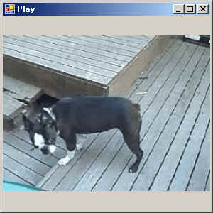
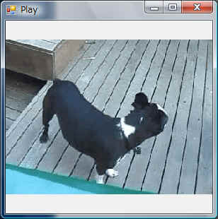
最も基本的なサンプルで、全ソースを下記に示します。
これだけで動画を再生できます。
|
Option Explicit
On Option Strict On '////////////////////////////////////////////////////////////// 'DShowLib サンプル Play '・フォーム内で動画を再生させるサンプルです。 '・フォームのサイズに合わせて、動画の縦横比を保ちながらサイズを調整します。 '////////////////////////////////////////////////////////////// 'DirectShowクラスライブラリ Imports DShowLib '-------------------------------------------------------------- Public Class Form1 'モジュール変数 Private mGrp As IGraphBuilder 'グラフ 'フォームロード時 Private Sub Form1_Load(ByVal sender As System.Object, ByVal e As System.EventArgs) Handles MyBase.Load 'グラフ生成 mGrp = CreateNewGraph() 'グラフ構築 mGrp.RenderFile("C:\Program Files\Microsoft Platform SDK\Samples\Multimedia\DirectShow\Media\Video\ruby.avi") 'フォーム内で縦横比を保って再生するように設定 SetVideoRendererOwner(mGrp, Me, RendererScale.KeepAspect) '再生開始 GraphPlay(mGrp) End Sub 'フォームクローズ時 Private Sub Form1_FormClosed(ByVal sender As Object, ByVal e As System.Windows.Forms.FormClosedEventArgs) Handles Me.FormClosed 'グラフの停止 GraphStop(mGrp) 'グラフの破棄 ReleaseInstance(mGrp) End Sub 'フォームサイズ変更時 Private Sub Form1_Resize(ByVal sender As Object, ByVal e As System.EventArgs) Handles Me.Resize 'フォーム内で縦横比を保って再生するように再設定 SetVideoRendererOwner(mGrp, Me, RendererScale.KeepAspect) End Sub End Class |
PlayLoop
動画ファイルを連続再生(ループ再生)させるサンプルです。
起動するとフォーム内で動画が連続再生されます。
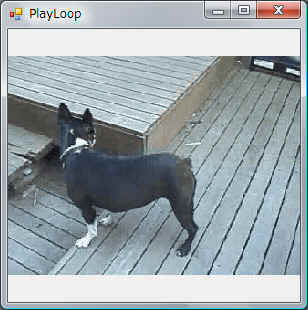
Seek
再生位置の取得／設定を行うサンプルです。
現在の再生位置をスライドバーで表現し、
スライドバーで再生位置を変更できます。
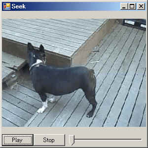
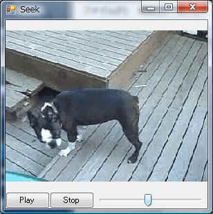
メディアの再生時間はIMediaPositionのget_Durationで取得します。
現在の再生位置の取得はget_CurrentPositionメソッドで行い、
put_CurrentPositionメソッドで再生位置を設定します。
CameraView
カメラ(ビデオキャプチャデバイス)の映像を表示します。
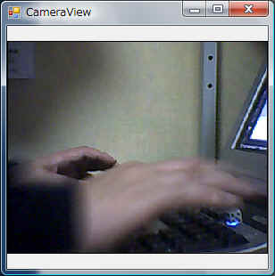
CameraSelect
カメラをユーザに選択させてライブ映像を表示します。
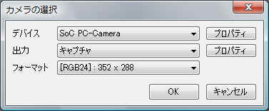
Snap
カメラから静止画を取得します。
左側の映像をクリックすると静止画を取得し右側に表示します。
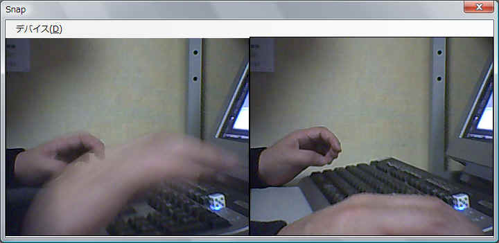
Snap２
カメラから静止画を取得します。
「Snap」と同様に、左側の映像をクリックすると静止画を取得し右側に表示します。
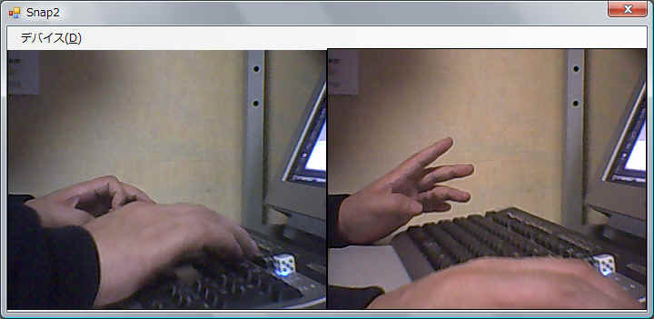
Capture
カメラからの映像を動画ファイルに保存します。
保存するときのエンコード方式を選択できます。
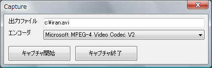
SoundWave
音声ファイルを再生し、再生位置の波形をリアルタイムで表示します。
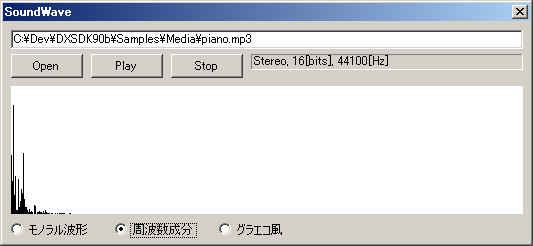
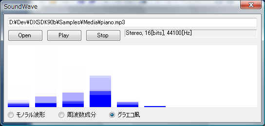
Telop
VMR9の機能を使い、動画に静止画を合成して再生します。
サンプルソースでははじめに見つかったカメラの映像に
現在時刻を表す時計を(半透明で)重ねて表示します。
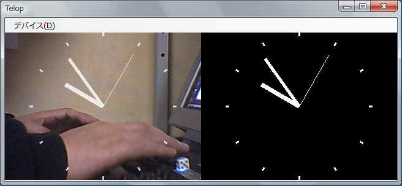
StreamBuffer
ストリームバッファを用いてカメラからの入力をファイルに保存します。
常にプレビューを表示させておきながら任意のタイミングで録画を開始/終了できます。
サンプル「Capture」でも同様のことが可能ですが、
いちいちグラフを作り直す必要があるため、見た目的に美しくありません。
ストリームバッファを使うとキャプチャするグラフと保存するグラフが分離しているので
プレビュー表示はずっと表示したままになり、なんとなくスマートに見えます。
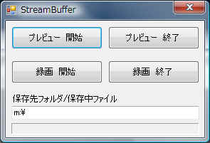